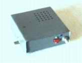
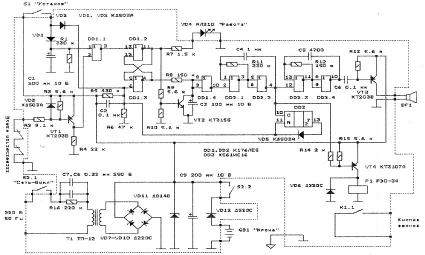
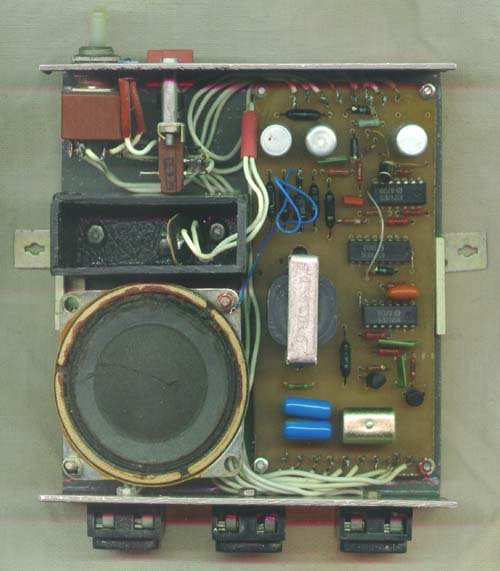

Охранная сигнализация для дома, квартиры, помещения, сейфа

Предназначена для контроля шлейфа сигнализации и может быть использована в помещениях или на объектах: дом, гараж, квартира, комната, касса, сейф.
Характеристики:
1. Подключение: сеть переменного тока 220 В (+ 15 %) 50 Гц (+ 2 %), потребляемая мощность не более 10 В ∙ А, время непрерывной работы не ограничено.
2. Резервный (автономный) источник питания - батарея напряжением 9 В ("Крона"), время работы от батареи до 6 часов.
3. Количество подключаемых шлейфов сигнализации - 1; в составе шлейфа могут использоваться нормально разомкнутые герконы с магнитами, фольга (на стеклах), проволока (на дверях, ограждениях).
4. Сопротивление шлейфа сигнализации не более 3 кОм, срабатывание - при нарушении целостности на время более 10 мс..
5. Величина постоянного напряжения на разомкнутом шлейфе сигнализации не менее 6 и не более 10 В.
6. Мощность внешнего коммутируемого устройства для подачи сигнала тревоги (например, звонка) не более 25 В ∙ А.
7. Режимы работы:
7.1. Режим установки: на 1 ... 2 мин отключается проверка шлейфа сигнализации для того, чтобы перевести помещение или объект в дежурный режим (покинуть помещение и закрыть дверь).
7.2. Дежурный режим: непрерывный контроль шлейфа сигнализации. При нарушении целостности шлейфа устройство переходит в режим тревоги с задержкой ~10 сек (время, в течение которого можно отключить устройство, не беспокоя окружающих).
7.3. Режим тревоги: подача сигнала тревоги в течение ~2 мин. После этого устройство вновь переходит в дежурный режим.
8. Интервал рабочих температур при относительной влажности воздуха от 30 до 80 % - от 0 до +35 оC.
9. Габариты устройства не более 135 х 45 х 160 мм3.
10. Масса устройства не более 0.5 кг.
Схема устройства:

Описание:
При переводе выключателя питания S2.1, S2.2 "Сеть-Выкл" в положение "Сеть" цепочка R5C2R6 устанавливает триггер DD1.2, DD1.3 на микросхеме К176ЛЕ5 (шлейф охранной сигнализации должен быть замкнут) и сбрасывает в ноль счетчик DD3 (К561ИЕ16). При этом загорается светодиод VD4 "Работа", расположенный на передней панели устройства. Транзистор VT2 открывается положительным напряжением, поступающим с выхода DD1, и блокирует узел DD1.4, DD2, DD3, вырабатывающий напряжения для подачи звукового сигнала и коммутации внешнего устройства. Входная цепь, согласующая устройство охранной сигнализации со шлейфом сигнализации, выполнена на элементах R2, R3, R4, VT1, VD3. Она также обеспечивает помехозащищенность устройства. При нажатии на кнопку S1 "Установ" конденсатор C1 заряжается через диод VD1 до напряжения питания. На вход элемента DD1.1 поступает логическая единица, блокирующая прохождение импульсов, возникающих при нарушении целостности шлейфа охранной сигнализации на коллекторе транзистора VT1 входной согласующей цепи. Логическая единица, проходящая через диод VD2 устанавливает триггер DD1.2, DD1.3. После отпускания кнопки S1 "Установ" конденсатор C1 начинает разряжаться через резистор R1, обеспечивая блокировку прохождения импульсов через элемент DD1.1 на время, равное 1 ... 2 мин. Таким образом осуществляется режим ожидания. После того, как конденсатор C1 разрядится до напряжения, меньшего, чем порог срабатывания элемента DD1.1, устройство переходит в дежурный режим работы. При нарушении целостности шлейфа охранной сигнализации на коллекторе транзистора VT1 возникают импульсы, проходящие через инвертор DD1.1 и сбрасывающие триггер DD1.2, DD1.3. Устройство переходит в режим тревоги. Светодиод VD4 "Работа" гаснет. Транзистор VT2 запирается, а конденсатор C3 начинает заряжаться через резистор R8, обеспечивая задержку включения звукового сигнала тревоги на время до 10 сек. Когда уровень напряжения на конденсаторе C3 превысит порог срабатывания элемента DD1.4, включается узел DD1.4, DD2, DD3, вырабатывающий напряжения для подачи звукового сигнала и коммутации внешнего устройства. С выхода генератора на элементах DD2.1, DD2.2 (1/2 К176ЛЕ5) импульсы частотой около 1 Гц поступают на счетный вход счетчика DD3, на вход транзисторного ключа VT4 и на вход запуска генератора импульсов частотой около 400 Гц, собранного на элементах DD2.3, DD2.4 (1/2 К176ЛЕ5). Пачки импульсов с частотой заполнения 400 Гц и частотой следования 1 Гц с выхода элемента DD2.4 усиливаются транзистором VT3 и подаются на излучатель звукового сигнала BF1. Транзисторный ключ VT4 управляет включением реле P1, которое своими замыкающими контактами коммутирует внешнее устройство, например, дверной звонок. Генератор импульсов DD2.2, DD2.2 работает около 2 мин до тех пор, пока на выходе счетчика DD3 не появится логическая единица. Она устанавливает триггер DD1.2, DD1.3 и сбрасывает счетчик DD3 в ноль Транзистор VT2 открывается и быстро разряжает конденсатор C3. Узел DD1.4, DD2, DD3 блокируется. Устройство вновь переходит в дежурный режим, если целостность шлейфа сигнализации к этому времени восстановлена.
Конструкция:

Электронная часть устройства монтируется на печатной плате, которая устанавливается на П-образном металлическом основании. На нем же устанавливаются и все остальные узлы и детали. Сверху основание закрывается П-образным металлическим кожухом, который крепится двумя винтами. На основании имеются две петли с отверстиями для монтажа устройства на какую-либо поверхность (например, стену) в укромном месте.
Состояние разработки
Охранная сигнализация была изготовлена в нескольких экземплярах и установлена на объектах (квартиры). В составе шлейфа сигнализации использовался контактный датчик на входной двери (геркон с полимерным постоянным магнитом [1]). В качестве внешнего устройства для подачи сигнала тревоги был применен входной звонок. Надежность изделий подтверждена безотказной эксплуатацией в течение достаточно продолжительного срока (до пяти лет).
Ссылки:
1. Изготовление и применение магнитопластов (магнитоэластов)
03.08.2003
03.02.2006
17.06.2010
Альтернативные источники
энергии
Компьютеры и
Интернет
Магнитные поля
Механотронные системы
Перспективные
разработки
Электроника и технология